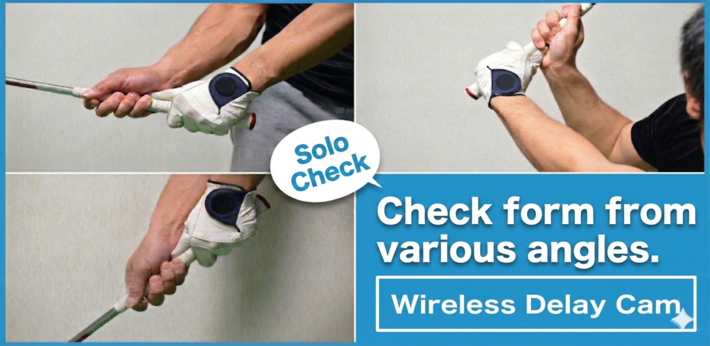
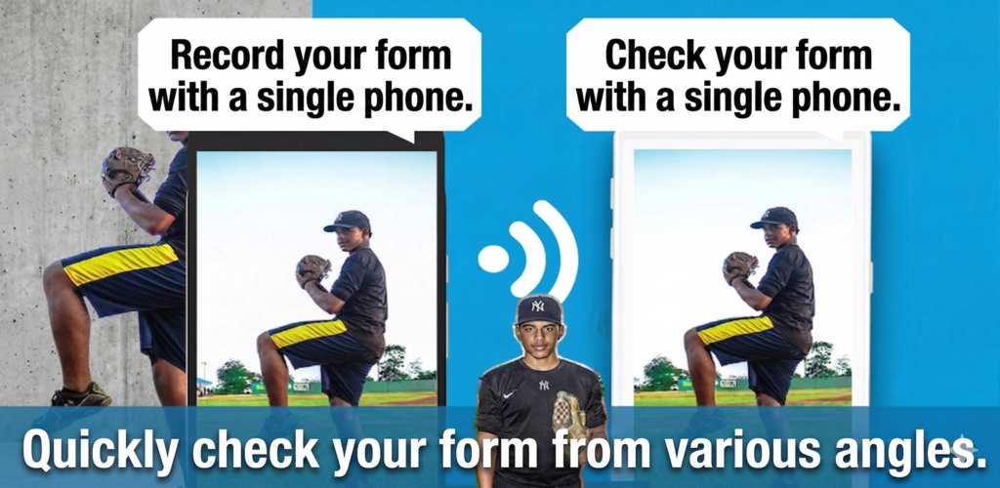
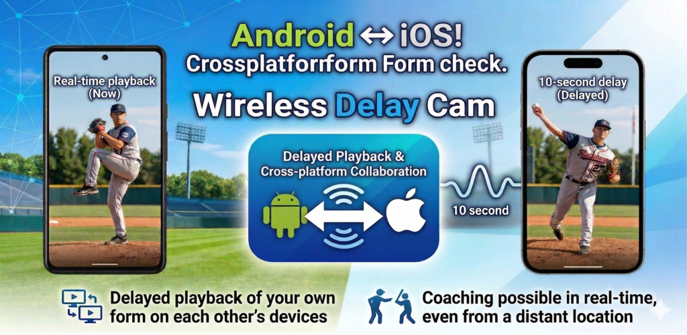

Works across different OS devices
Use an iPhone as the camera and an Android phone as the monitor, or swap the roles. The app is designed for mixed-device workflows.
Cross-Platform Wireless Video Transfer
Wireless Delay Cam connects camera and display devices across iOS and Android. Send live video wirelessly on the same Wi-Fi network or through tethering, then pair quickly with automatic discovery or QR code setup.



Features
Use an iPhone as the camera and an Android phone as the monitor, or swap the roles. The app is designed for mixed-device workflows.
No router is required. If one device can create a tethered network, both the camera and display device can join and start streaming.
The display device can be found automatically on the same network, reducing setup time when both devices are nearby.
Scan the display device QR code from the camera side to connect without manually typing network details.
Set delay on the receiving side when you need time-shifted monitoring, comparisons, or presentation effects.
The receiver supports zoom, mirror view, and recording. The sender can also save the stream when needed.
How It Works
Launch one device as the camera and the other as the display unit.
Use auto discovery on the same Wi-Fi network or pair immediately with a QR code.
Adjust latency, bitrate, and orientation on the display side so the output matches your use case.
Watch the incoming video and use recording or zoom controls when needed.
Screens


Use Cases
Capture on one device and verify the feed on another, even when the devices run different operating systems.
Add intentional latency for motion comparison, demonstrations, or visual presentation setups.
Build a lightweight monitoring setup without dedicated hardware when iOS and Android devices are both on site.
FAQ
No external internet connection is required as long as both devices can see each other on the same Wi-Fi or tethering network.
No. The app supports both automatic discovery and QR code pairing, so you can choose the faster option for the situation.
Yes. The app is designed for cross-platform combinations where the sender and receiver run on different mobile operating systems.
Yes. Both the sender and receiver sides include stream-saving options that you can enable when needed.